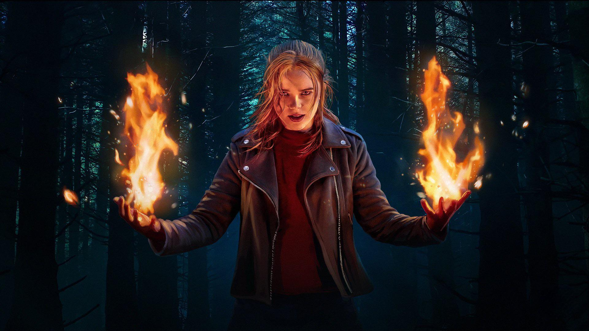

Fate: A Saga Winx é uma série original da Netflix que apresenta uma história de fantasia e aventura baseada na popular franquia de animação italiana "Winx Club". A série segue a jornada de cinco jovens fadas que frequentam a Alfea, uma escola mágica que ensina a controlar seus poderes e habilidades.